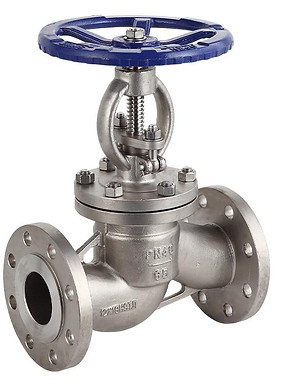

KHD – Huadu Industrial Valves


Product Categories
01 — BALL VALVES
Contact Servtech for product selection, specifications and technical support.
02 — GATE VALVES
Contact Servtech for product selection, specifications and technical support.
03 — GLOBE VALVES
Contact Servtech for product selection, specifications and technical support.
04 — CHECK VALVES AND FILTERS
Contact Servtech for product selection, specifications and technical support.
05 — BUTTERFLY VALVES
Contact Servtech for product selection, specifications and technical support.
06 — THREADED VALVES
Contact Servtech for product selection, specifications and technical support.
07 — ELECTRIC AND PNEUMATIC ACTUATED VALVES
Contact Servtech for product selection, specifications and technical support.